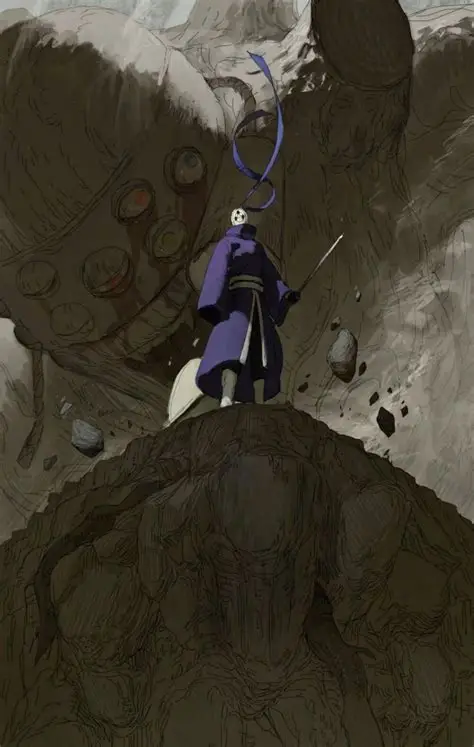

宇智波带土，白面具形态是其潜伏忍界时期的主要样貌，也是第四次忍界大战前期的核心主导者，暗中操控晓组织搅动整个忍界局势。
一、少年初心 温情少年
出身木叶宇智波一族，幼时资质平平，性格温柔善良，内心自卑又渴望被认可。
十分重视友情，与卡卡西、野原琳同为波风水门弟子，三人情谊深厚。
梦想成为守护同伴、守护村子的优秀忍者，待人真诚，内心纯粹热忱。
修行刻苦，一心想要变强，追上身边优秀之人，守护自己珍视之人。
二、战场巨变 身死假象
第三次忍界大战执行任务时，为营救卡卡西被巨石重创，半边身体损毁。
众人皆认定带土已经战死，卡卡西继承其写轮眼，为挚友心怀悲痛。
濒死之际被宇智波斑救下，依靠白绝躯体得以存活，从此与世隔绝。
亲眼目睹挚爱之人琳惨死在卡卡西手中，内心信仰彻底崩塌，彻底坠入黑暗。
三、蛰伏伪装 隐姓埋名
接受斑的思想灌输，放弃曾经的理想，决心执行月之眼计划。
常年佩戴白色面具隐藏真实身份，改换身形与语气，游走于忍界各处。
刻意模仿宇智波斑的行事风格，让所有人都误以为自己是传说中的斑。
收敛所有温情，性情变得冷酷多疑，心思缜密，擅长布局算计各方势力。
四、执掌晓组织 暗中布局
以幕后黑手身份掌控晓组织，利用弥彦创立的组织，扭曲最初和平理念。
煽动各路叛忍集结，下令四处抓捕尾兽，挑起各大忍村之间的矛盾冲突。
暗中策划九尾之乱、宇智波灭族等诸多重大事件，一步步扰乱忍界秩序。
游走在各大势力之间挑拨离间，为第四次忍界大战做好万全铺垫。
五、白面具出战 威慑忍界
前期始终以白面具形态现身战场，极少展露真正实力与全部样貌。
熟练运用神威空间忍术，攻防兼备，可随意穿梭异空间，几乎无人能够困住。
手握轮回眼之力，精通多种六道忍术，战力高深莫测，震慑无数强者。
凭借智谋与强大实力，步步紧逼忍者联军，将整个忍界拖入战火之中。
六、身份揭晓 彻底爆发
大战之中摘下白面具，宇智波带土的真实身份公之于众，震惊全场众人。
褪去伪装不再隐藏，彻底释放全部实力，直面昔日恩师与旧日同伴。
融合十尾之力，化身十尾人柱力，战力瞬间飙升至六道级别，横扫战场。
内心依旧残留少年时期的温柔，时常在黑暗与本心之间不断挣扎徘徊。
七、迷途知返 终获救赎
在鸣人真挚的信念与过往回忆的唤醒下，彻底摆脱黑暗思想的束缚。
幡然醒悟认清自身过错，抛弃月之眼的疯狂执念，重拾年少本心。
毅然选择站在忍者联军一方，对抗真正的幕后黑手，弥补自己犯下的过错。
为守护同伴与忍界未来，挺身而出挡下致命攻击，坦然走向牺牲之路。
八、落幕释怀 灵魂归乡
临终前将完整万花筒写轮眼赠予卡卡西，了结一生所有遗憾与执念。
彻底放下年少遗憾、爱恨与执念，坦然接受自己一生的结局。
从温柔少年到黑暗枭雄，最终回归本心，完成自我救赎，安然离去。
九、人物信条
我曾想守护现实，后来只想创造一个，有你的完美世界。